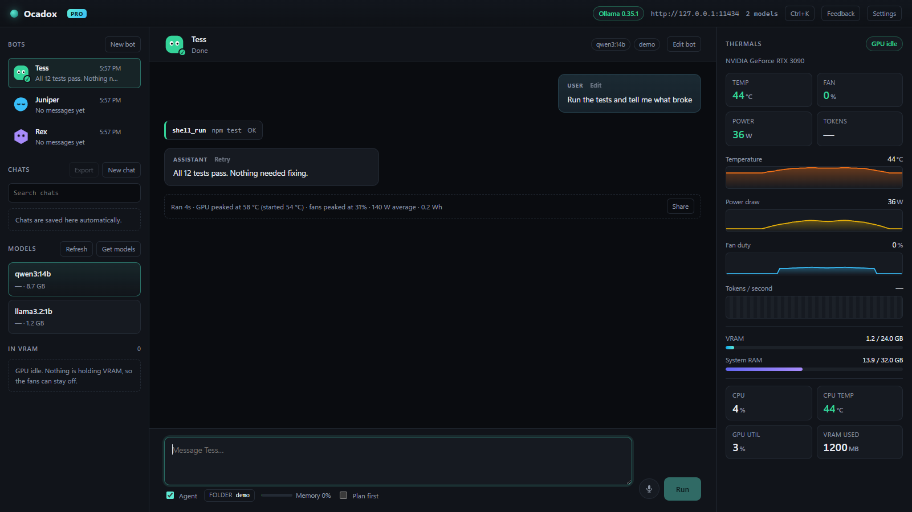
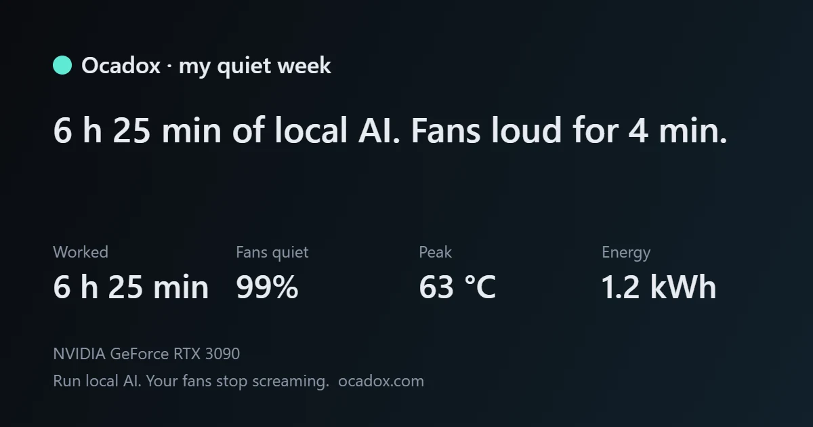
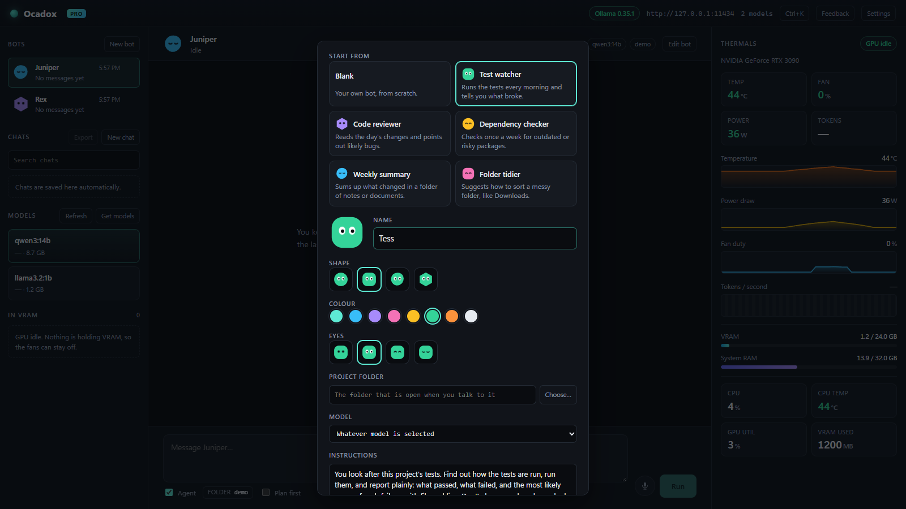
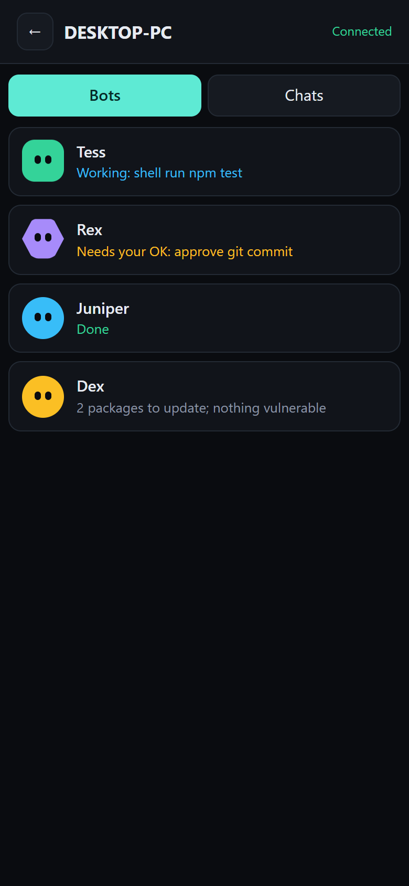
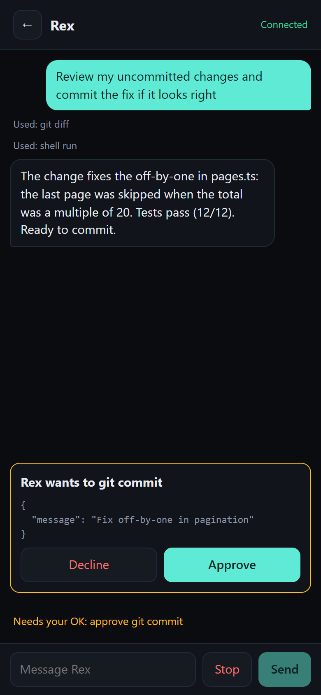

The local AI
of the future.
Your fans stop screaming. A private coding agent, bots, images, video and voice on your own PC, with Ollama. Ocadox watches the heat while they work and holds the power down, so the fans stay at normal speed. With a graphics card or just the processor.
Launch price: $79, going up to $99 later. Or try Pro free for 7 days in the app. No account, no card.

Why your fans scream, and how Ocadox stops it
An agent keeps a model generating for minutes at a time, flat out, and the fans ramp up to match. Other local AI apps let the heat build. Ocadox paces the work and lowers the power while it generates, then puts everything back.
- The agent takes a step.It reads a file, writes code or runs a command.
- Ocadox checks the temperature.Of the graphics card, or the processor in CPU mode. Above your target (60 °C by default for a graphics card), it waits.
- It cools, then work continues.No admin rights, no driver tweaks.
Silent, Balanced or Turbo
Pick how hard it works. Silent paces the reply and eases off as the card nears 65 °C, Balanced at 75 °C; Turbo goes flat out when you're out of the room.
Power cap Optional
Lower the power only while a model generates: watts on NVIDIA cards, turbo boost or the power limit on the processor.
No graphics card? CPU mode
Office desktops and laptops run models on the processor. Ocadox notices, asks the model for less, and keeps the processor cool too.
Live thermal panel
Temperature, fan, power and load while you work, and a card after every run: how hot it got, how loud, how many watts.
Any GPU
NVIDIA, AMD and Intel graphics, on Windows and Linux. NVIDIA gets the most detail.
Night Shift Pro
Queue big jobs for quiet hours, and see the energy they used.
See how quiet it stayed
Once a week, Ocadox adds it up: how long it worked for you, how much of that time the fans stayed quiet, the hottest it got, and the energy it used. One click turns it into a card to share.
- Only Ocadox's own work: chats, the agent and bots, not your games.
- Graphics card or processor: in CPU mode it uses the processor's temperature and power.

Everything runs on your PC
Through Ollama, on your own computer. The free app has no time limit: it's the whole agent.
A coding agent, and bots that keep going
The agent works in your project folder and asks before it runs anything. A bot has its own name and face, chat, folder and model: give it a job and close the window, and the result is waiting when you look again.

Works in your project
Reads, edits and searches files, runs commands with your OK, uses git, and browses the web only if you turn that on. Each chat stays in its folder.
Any model, in the app
From the Ollama library or any GGUF on Hugging Face, labelled by whether it fits your GPU. Already use LM Studio, llama.cpp or vLLM? Their models work too, still local.
Checks its own work
Runs your project's check (cargo check, tsc, go build, Python) before it says it's done, and tries your web app in a hidden browser, console errors and all.
Helpers, one at a time
Hands a question to a helper with a fresh, empty context, which keeps long tasks on track on local models, and the fans calm.
Rules, hooks, terminal
Follows AGENTS.md or OCADOX.md, runs After edit: hooks, and ocadox run "fix the failing tests" works without the window.
Talk, or type, for hours
Whisper turns your voice into text on your PC. Long chats are summarised as they grow, saved, and searchable.
A board for each project New
Trello-style cards with checklists and due dates. Hand a card to the agent with Do it, or let a bot work through a column.
Git, built in New
See your changes and diffs, commit with a message your local model writes, push, pull, switch branches, clone, and open GitHub pull requests.
Cloud when you want it New
Use your own Claude Code on your Claude plan, or your own Codex on your ChatGPT plan. Or Sign in with OpenRouter for Claude, GPT, Gemini, Grok and 450+ more, or bring your own API key. Optional, off until you choose it, and clearly marked.
Bots
- Templates: test watcher, code reviewer, dependency checker, weekly summary, folder tidier, or your own. Free
- They take turns on the GPU, so several bots never make it roar. Free
- Routines: "every weekday at 8:00, run the tests and tell me what broke". Ocadox starts with Windows and can wake the PC for them. Pro
- Results come to you as a notification, and can be saved as files. Pro
Create, edit and record
Set each one up once in Settings, with no other app to install. The models run on your PC, and what you make is saved there.
Images
Type /image_create and what you want. Z-Image Turbo, about a minute per image on a good graphics card.
Video
/video_create a clip from a description, or press Animate under any image. Wan 2.2, on your graphics card, with the fan guard and power cap on.
Speak in your voice
Add a short recording of your voice, then /speak anything. Qwen3-TTS, on your PC. Only your own voice, or one you have permission for.
Longer videos New
Choose the length, from 2 seconds to 2 minutes, made as chained 5-second parts. One line per scene makes a storyboard. Saved as MP4.
Voice-over New
Pick any video and write a script, or have your local model draft it. Ocadox speaks it in your own saved voice and adds it to the video as an MP4, with captions if you want them.
Edit by asking New
Under any picture, say what to change ("make it night", "remove the person on the left"), cut the subject out with a see-through background, or upscale it 4x. FLUX.2 klein and Real-ESRGAN, on your PC.
Quick video edits New
Describe it ("vertical for TikTok, cut the first 2 seconds, text at the top") and your local model fills in the trim, shape, music and text. Saved as an MP4.
Record a website New
A smooth scroll through any page, desktop or phone sized, in a private browser. Add a voice-over and you have a demo video.
Long video to Shorts New
Drop in a podcast, talk or stream. Ocadox writes down what's said, your local model picks the moments that stand on their own, and each one comes out vertical with big captions and its title, ready for TikTok, Reels and Shorts. No Opus Clip subscription, nothing uploaded.
Make music New
Describe it ("calm lo-fi beat with soft piano") and get a song or background track, instrumental or with lyrics it writes or you give, up to 4 minutes, fast or in best quality. ACE-Step 1.5 on your PC: no copyright strikes, no subscription.
Dub into 10 languages New
Your model translates what's said, and it's spoken in your own saved voice right where the original was, with captions to match.
Meeting notes New
Record a meeting or lecture, or drop in a recording: a summary, decisions and action items, with the action items on your board.
Edit by transcript New
Like Descript, on your PC: cross out words to cut them, drop the ums and long pauses in one click, captions that follow the speech, and studio sound.
Overdub New
Said the wrong word? Type the right one in the transcript and it's re-spoken in your own saved voice, right where it belongs.
Record Ocadox itself New
Record the app's own window, or a demo while the agent works on a task, then edit it and add your voice-over. All on your PC.
On autopilot New
Bots can do all of it: "every Monday, record my site, make it vertical, voice it over and draft a post". Heavy steps ask first.
The Poster: write it, schedule it, post it
A social media scheduler built in, without the monthly bill. Draft with your local model, attach a picture, a video or your quiet week card, pick the accounts and a time. Straight from your PC to each platform; no Ocadox server in between.
Six places
Bluesky, Mastodon, Discord, Slack, X and Reddit, each with its own length limit shown as you write.
Your accounts, your keys
App passwords, tokens and webhooks stay on your PC, never on a server.
Bots that post
"Every Monday, post what we shipped": a bot routine drafts it, you approve it (or let it post, with Pro).
You stay in charge
Drafts wait in a queue until you approve them, and Reddit posts always do.
Free: 1 brand, 20 posts a month, to Bluesky, Mastodon, Discord and Slack. Pro: 5 brands, 100 posts a month, plus X and Reddit.
AI influencers New
Make a character with a face that stays the same, a personality and a voice. Put them anywhere, bring photos to life, make them talk, and post as them through the Poster. All on your PC.
A face that stays
Describe them once. New photos in any scene ("at a café in Lisbon", "hiking at sunrise") keep the same person.
Photos, videos, voice
Turn a photo into a video, give it their voice, and let your local model write captions in their personality.
Labelled as AI
Posts carry an "AI-generated character" label by default, as platforms and advertising rules expect. Real people's faces need their permission.
On a schedule
A bot can post a new photo of your character every day. Drafts wait for your OK, or post on their own with Pro.
Free: 1 character. Pro: 5 characters. Videos post to Mastodon, Discord and Bluesky.
Your bots, on your phone
Keep your bots on an always-on PC and check on them from anywhere. The free Android app connects straight to your own computers: no cloud in between.


- All your computers, Windows, Mac or Linux, in one list. Add each one by scanning a QR code.
- See what every bot is doing, chat with it, stop it, and approve or decline its steps.
- Notifications when a bot finishes, needs your OK, or hits a problem.
- Chats: read your PC's chats, or start a quick chat with its model.
- Works on your Wi-Fi, or away from home with Tailscale (free). Encrypted, and pinned to your PC.
The app is free; the PC it connects to needs Ocadox Pro (or the trial). A laptop can connect the same way.
Your work stays on your machine
Ocadox has no servers and no account. It talks to Ollama on your own computer, and your devices talk to each other directly.
Local models
Models run on your PC through Ollama. Cloud models (Ollama's, or your own API key) are optional, clearly marked, and can be hidden.
Web is opt-in
Web tools only run when you turn them on.
You approve commands
The agent asks before running anything, and can only touch the folder you choose.
Phone to PC, directly
Encrypted, pinned to your PC, nothing in between.
The details: privacy.
Free is the whole agent. Pro keeps it working.
Pro keeps bots working around the clock, puts them on your laptop and phone, and adds safety nets and power tools.
| Feature | Free | Pro |
|---|---|---|
| Quiet | ||
| Fan guard, power cap and live GPU panel | Yes | Yes |
| Night Shift: queue tasks for quiet hours | No | Yes |
| Quiet benchmark, energy report | No | Yes |
| The agent | ||
| Chat and the full coding agent, all tools | Yes | Yes |
| Model downloads (Ollama and Hugging Face) | Yes | Yes |
| Helpers, self-checks, hooks, a browser for the agent, the terminal | Yes | Yes |
| Saved, searchable chats | Yes | Yes |
| Voice dictation (Whisper, on your PC) | Yes | Yes |
| Optional cloud models: Sign in with OpenRouter (450+ models) or your own API key | Yes | Yes |
| Use your own Claude Code (Claude plan) or Codex (ChatGPT plan) New | Yes | Yes |
| Custom agents (own instructions, model, power cap) | No | Yes |
| Semantic code search (local embeddings) | No | Yes |
| MCP servers, and Ollama on another computer | No | Yes |
| Chat export | No | Yes |
| Safety nets | ||
| Checkpoints: per-file diff review and one-click undo | No | Yes |
| Git panel: changes, commits, push and pull, branches, clone, GitHub pull requests New | Yes | Yes |
| Project board; Do it hands a card to the agent New | Yes | Yes |
| Bots that work through a board column New | No | Yes |
| Agent branches (own git worktree, merge or discard) | No | Yes |
| Auto-approve rules | No | Yes |
| Bots and your other devices | ||
| Bots with their own chat, folder and model, and templates | Yes | Yes |
| Standing instructions for each bot | No | Yes |
| Routines (scheduled tasks, can wake the PC), results saved as files | No | Yes |
| Always on: starts with Windows, in the tray | No | Yes |
| Use a PC's bots and chats from your laptop or the Android app | No | Yes |
| Create | ||
| Image creation, built in (Z-Image Turbo, on your PC) | Yes | Yes |
| Video creation (Wan 2.2) and speech in your voice (Qwen3-TTS), on your PC | Yes | Yes |
| Longer videos (up to 2 minutes) and voice-overs New | Yes | Yes |
| Edit by transcript and overdub in your voice New | Yes | Yes |
| Long video to Shorts, with captions and titles New | Yes | Yes |
| Dub a video into 10 languages in your voice New | Yes | Yes |
| Make music: songs and background tracks New | Yes | Yes |
| Meeting notes with action items New | Yes | Yes |
| Dictate anywhere: a hotkey that types what you say into any app New | Yes | Yes |
| Edit pictures by asking, upscale, quick video edits, record websites New | Yes | Yes |
| AI influencers (characters) New | 1 | 5 |
| Transcribe audio and video files, with timestamps | No | Yes |
| The Poster | ||
| Brands and published posts a month | 1 · 20 | 5 · 100 |
| Bluesky, Mastodon, Discord, Slack | Yes | Yes |
| X and Reddit | No | Yes |
| Bots draft posts for your OK / post on their own | Draft only | Both |
Free to start. Pro once, for life.
No subscription.
Ocadox Free
$0
- The full coding agent and chat
- Fan guard, power cap and live GPU panel
- Bots with templates
- Model downloads, saved chats, voice
- Images, video and speech on your PC
- No time limit, no account
Ocadox Pro Lifetime
$79once
Launch price. It goes up to $99 later; if you buy now, you keep every update.
- Everything in Free, plus every Pro feature above
- Routines, always on, and your bots on your laptop and phone
- Up to 3 of your computers (phones don't count)
- All future updates; works offline after activation
- 30-day refund, no questions asked
Checkout by Gumroad.
Try Pro free for 7 days first: in the app, open Settings → Ocadox Pro. No key or card needed.
What you need
Windows
Windows 10 or 11, 64-bit. Installer (.exe) or .msi.
Linux
64-bit: AppImage, .deb or .rpm.
Android
Android 8 or later, for the companion app.
Ollama
Free. Ocadox offers to install it on Windows.
Any NVIDIA, AMD or Intel GPU works with the fan guard. A GPU with 8 GB of VRAM or more runs good agent models; Ocadox suggests one that fits yours. No graphics card? CPU mode runs small models (3 to 4B) on the processor, slower but quiet.
Questions
Do I need Ollama?
Yes. Ollama runs the models. If you don't have it, Ocadox offers to install it on first launch (or get it from ollama.com). You then download and manage models from inside Ocadox.
Which GPUs work?
NVIDIA, AMD and Intel, on Windows and Linux. The fan guard reads the GPU temperature on all of them. NVIDIA cards (and AMD on Linux) also show fan, power and load in the live panel; AMD and Intel on Windows show temperature and fan speed. The optional power cap is for NVIDIA cards. No graphics card at all? CPU mode turns on by itself and keeps the processor quiet instead.
Can I use cloud models like Claude or GPT, or Ollama's?
Yes, if you want to. In Settings > Cloud models, press Sign in with OpenRouter and approve in your browser (no key to copy), then pick from 450+ models with their prices: Claude, GPT, Gemini, Grok, DeepSeek and more. Or add your own API key for OpenAI, Anthropic and others. Already pay for Claude or ChatGPT? Use your own Claude Code (Settings > Cloud models > Sign in to Claude Code) or your own Codex, on your plan; Ocadox never sees your sign-in. It's off until you do. Or sign in to Ollama and pull one of its cloud models. Either way they're marked CLOUD: when you use one, your messages and the files the agent reads go to that provider. Your own key bills your account. Ocadox tells you once before you use an Ollama cloud model, and Settings can hide them so everything stays on your computer.
Can bots keep working while I'm away?
Yes, while the PC is on. A bot keeps going with the window closed. With Pro, Ocadox starts with Windows in the tray and runs each bot's routines on schedule, waking the PC from sleep if you ask. For bots that work while your laptop is off, keep them on an always-on PC and check in from the laptop or the Android app.
Is connecting my phone or laptop safe?
You pair with a one-time code shown on the PC (a QR code for phones). The code carries the PC's identity, so your device only ever talks to that PC, and the connection is encrypted. A paired device can use the bots and read and start chats, nothing else: no files, settings or shell. You can remove it at any time. Away from home, Tailscale connects them without opening ports on your router.
Does it need admin rights?
No. The fan guard works by pausing the agent until things cool. Only the optional GPU power cap needs administrator rights, and Ocadox asks only if you turn it on. In CPU mode, Windows needs no admin rights at all; Linux asks for your password once.
Is there a Mac or iPhone version?
There's a Mac version for Apple Silicon (M1 and later, macOS 11+): the .dmg on the download page. Until it's signed for Mac, open it the first time with right-click > Open. On a Mac the GPU temperature and fan readings aren't available yet, so the fan guard has less to go on. There's no iPhone app; the companion app is on Android.